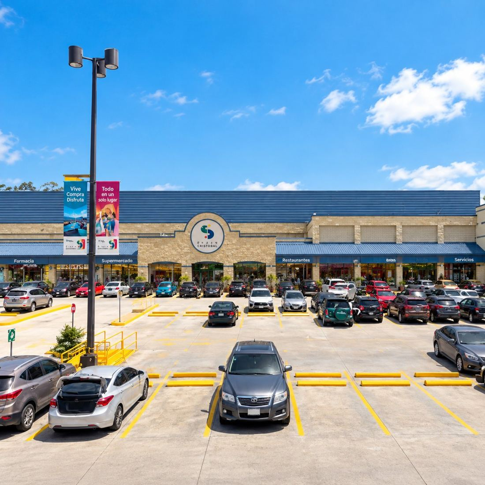
El primer centro comercial de la firma y el punto de quiebre: el paso de desarrollar vivienda a desarrollar comercio.
Una selección de los proyectos que definieron la trayectoria de la firma, en orden cronológico. Cuatro décadas de comercio, vivienda y colaboración con terceros en el área metropolitana.

El primer centro comercial de la firma y el punto de quiebre: el paso de desarrollar vivienda a desarrollar comercio.
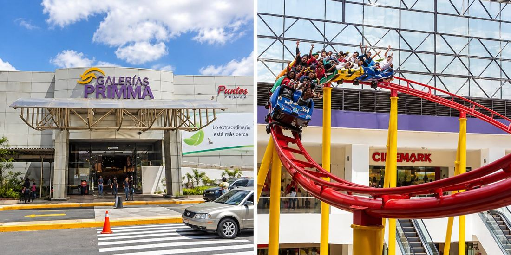
Reconocido por su techo curvo iluminado y por albergar una montaña rusa bajo techo.
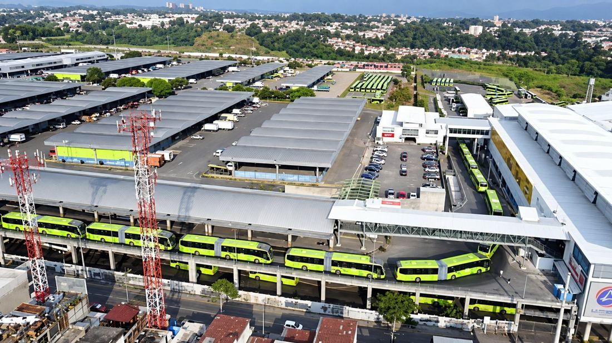
Integra la estación de transferencia entre buses extraurbanos y el Transmetro, desarrollada en colaboración con la Municipalidad.
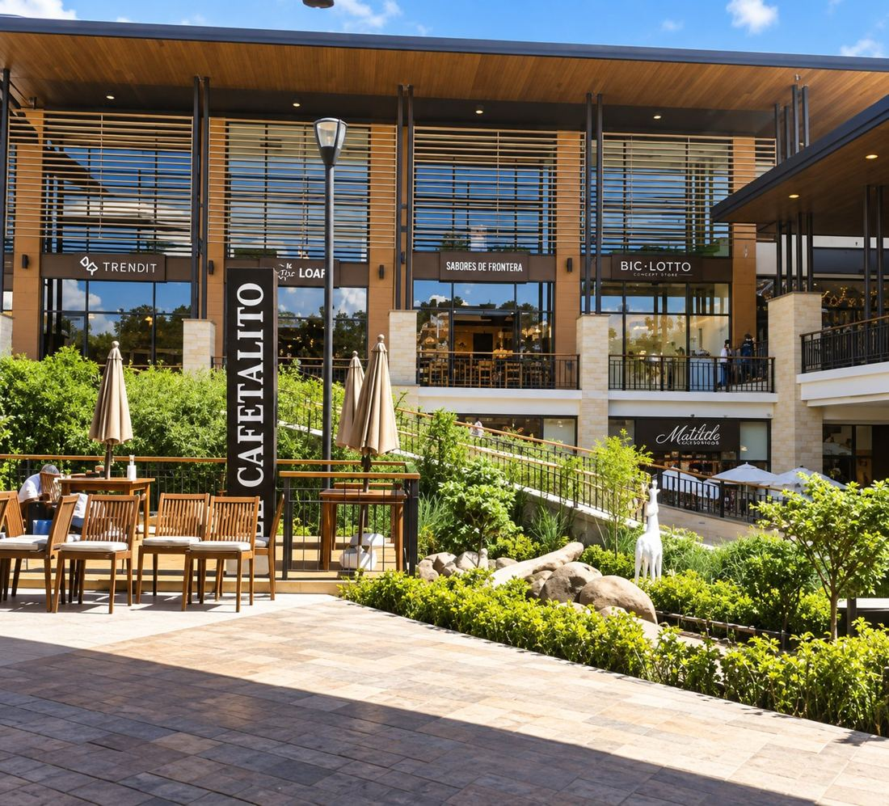
El desarrollo más reciente del portafolio comercial, sobre uno de los corredores de mayor crecimiento del área metropolitana.
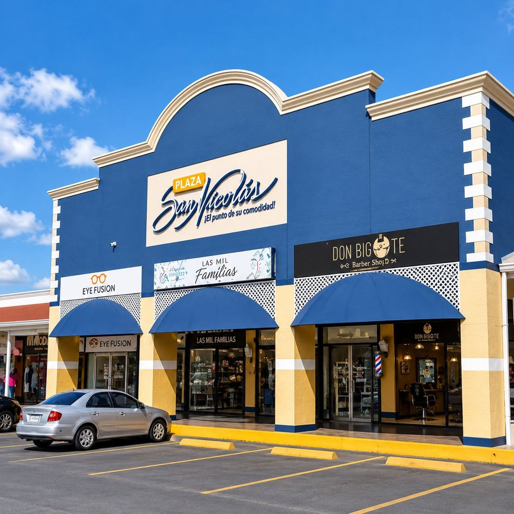
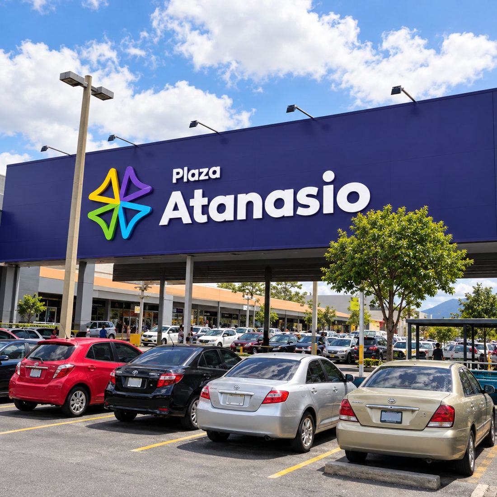
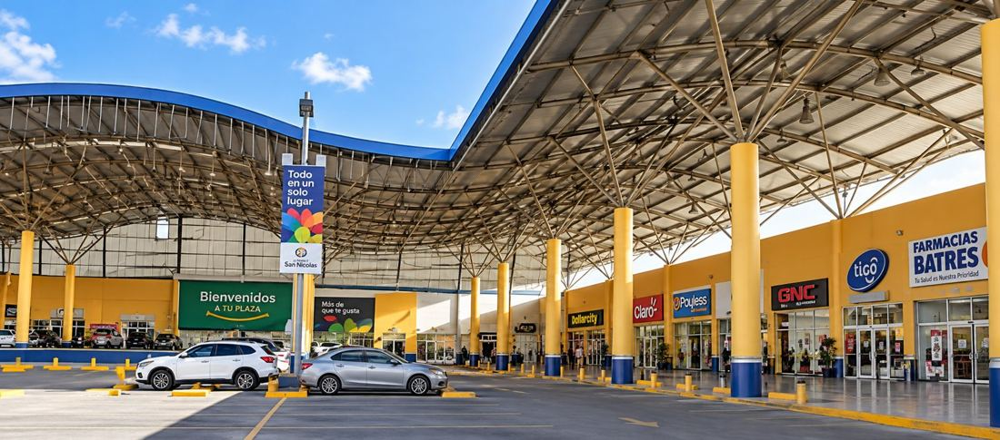
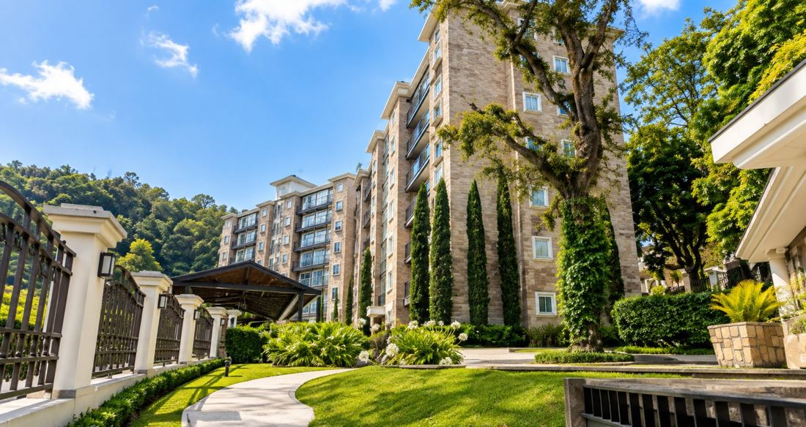
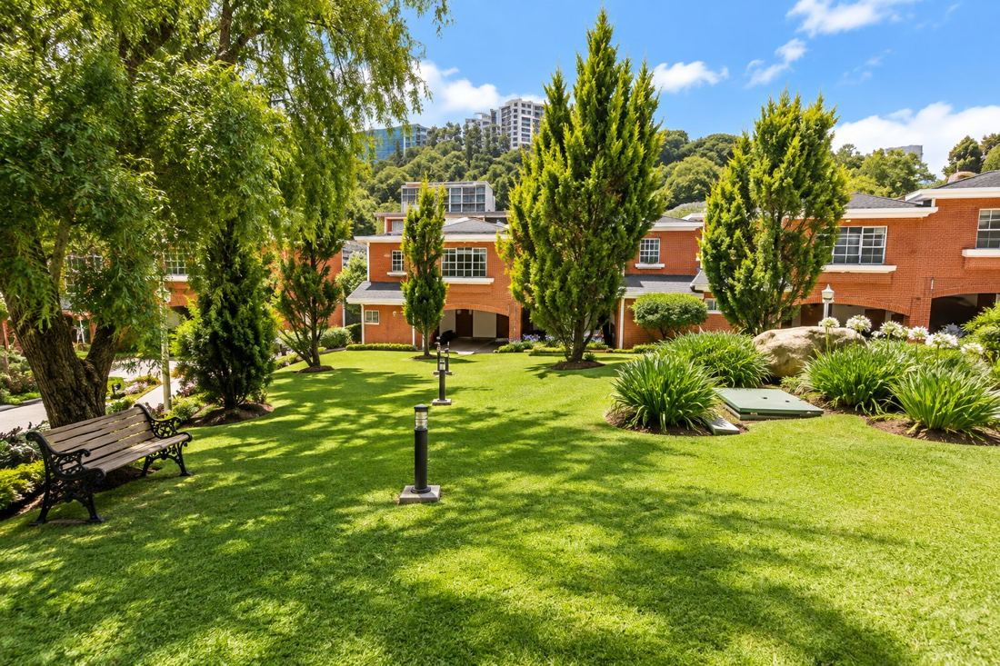
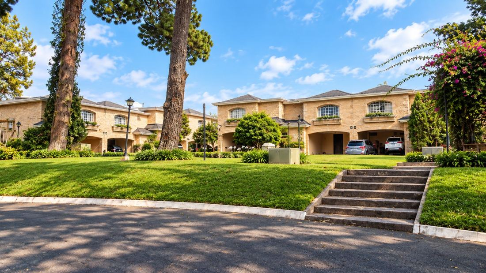
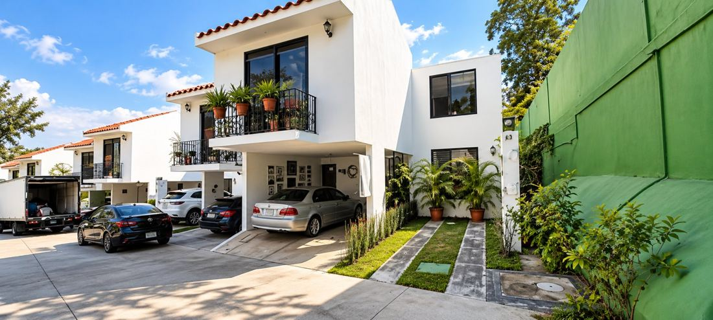
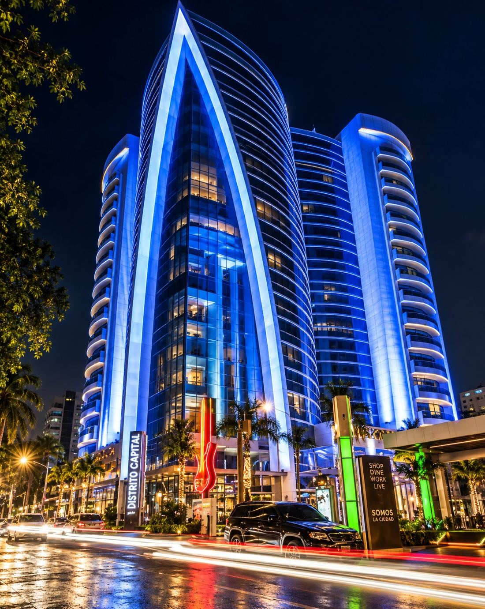
proyectos de terceros en los que Arqs. M. Urruela fue parte, sin dejar de ofrecer sus servicios a quien los buscaba.